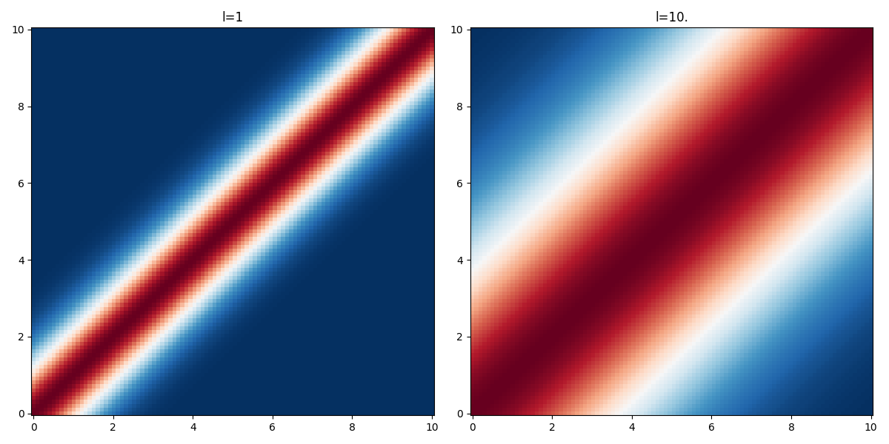

Squared exponential kernel
The squared exponential kernel defines a stationary gaussian process and results in a smooth prior over the space of functions that can be sampled from the gaussian process. In 1 dimension we write:
\begin{align*} \displaystyle K(x, x') &= \sigma^{2}\, \exp\left(-\frac{{d}^{2}}{2 l^{2}}\right),\quad d=x'-x \end{align*}And in \(D\) dimensions with the covariance matrix \(\Sigma\) between the different dimensions:
\begin{align*} \displaystyle K(\mathbf{x}, \mathbf{x'}) &= \Sigma^{2}\, \exp\left(-\frac{1}{2} \sum_{d=1}^D \frac{{(x'_d-x_d)}^{2}}{l_d^{2}}\right) \end{align*}The parameter \(l\) is the characteristic lengthscale of the process. As one can see on the figure below, the larger the value of \(l\) the "further" the kernel takes non-negligible values.
